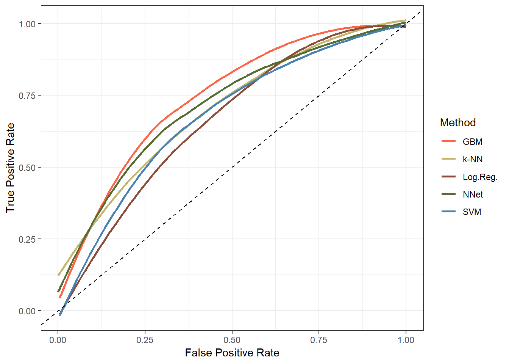
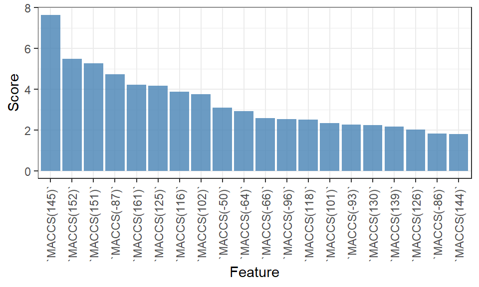

We begin by loading the relevant libraries and data.
library( tidyverse )
library( ABCmonster )
data( MACCSbinary )Univariate analysis
As a precursor to training machine learning models, we first measure association with the sensitive / resistant labels by examining one feature at a time. This is done by applying Fisher’s exact test. Because the test is applied multiple times, we also compute FDR using the Benjamini & Hochberg procedure.
## Look at training data only (as determined by Label not being NA)
P <- MACCSbinary %>% filter( !is.na(Label) ) %>%
## Apply Fisher's Exact test against the Label column for each MACCS feature
summarize_at( vars(`MACCS(--8)`:`MACCS(165)`), ~fisher.test(.x, .y)$p.value, .$Label ) %>%
## Compute the associated FDR
gather( Feature, pval ) %>% mutate( FDR = p.adjust(pval, "fdr") ) %>% arrange(FDR)Looking at the most significant features, we note that six MACCS keys have an FDR below 0.05.
filter( P, FDR < 0.05 )## Feature pval FDR
## 1 MACCS(145) 5.913574e-07 8.811226e-05
## 2 MACCS(152) 1.076770e-04 7.169289e-03
## 3 MACCS(158) 1.737350e-04 7.169289e-03
## 4 MACCS(161) 1.924641e-04 7.169289e-03
## 5 MACCS(151) 2.448641e-04 7.296951e-03
## 6 MACCS(150) 6.716003e-04 1.667807e-02Let’s plot contingency tables for these keys.
## Isolate the training data and reshape the data frame to be in long format
CT <- MACCSbinary %>% filter( !is.na(Label) ) %>%
select( -Drug, -pubchem_id ) %>% gather( Feature, Count, -Label ) %>%
## Merge against previously-computed p-values and select features with FDR < 0.05
inner_join( P, by="Feature" ) %>% filter( FDR < 0.05 ) %>%
## Compute contingency table for each Label / Feature pair
group_by( Label, Feature ) %>% summarize( Yes = sum(Count), No = n() - sum(Count) ) %>%
ungroup %>% gather( Category, Count, -Label, -Feature )
## Define the size legend to be used by the plot
sg <- guide_legend( title = "# Drugs", override.aes=list(fill="gray50") )
## Plot the contingency tables
ggplot( CT, aes( y = Category, x = Label, size = Count, fill = Label, alpha = Category ) ) +
geom_point( shape=21, color="black" ) + theme_bw() +
facet_wrap( ~Feature, ncol=2 ) +
scale_size_continuous( range = c(2,22), breaks = c(15, 25, 50, 100, 200 ),
guide = sg ) +
scale_fill_manual( values = c( Resistant="tomato", Sensitive="steelblue" ), guide=FALSE ) +
scale_alpha_manual( values = c( No=0.5, Yes=1 ), guide=FALSE ) +
xlab( "Effective against ABC-16" ) + ylab( "Key present" )
Cross-validation
Before making predictions on the test data, we would like to select the appropriate algorithm. To do so, we run cross-validation to compare a number of popular methods: k-nearest neighbors (k-NN), gradient-boosted random forests (GBM), logistic regression with elastic net regularization (Log.Reg.), a support vector machine (SVM), and a neural network (NNet). The ABCmonster package provides a convenient function to evaluate all five methods on the same train-test split.
## Fix the random seed to ensure reproducibility of this vignette
set.seed( 1 )
CV <- ABCcv( MACCSbinary )## Training knn ...
## Training gbm ...
## Training glmnet ...
## Training svmLinear ...
## Training nnet ...Let’s look at the first few rows of the output
head(CV)## Label Drug pubchem_id Method Pred
## 1 Sensitive lomerizine dihcl 3949 GBM 0.4791134
## 2 Sensitive lomerizine dihcl 3949 k-NN 0.3972222
## 3 Sensitive lomerizine dihcl 3949 Log.Reg. 0.4209963
## 4 Sensitive lomerizine dihcl 3949 NNet 0.2720486
## 5 Sensitive lomerizine dihcl 3949 SVM 0.3600332
## 6 Sensitive clotrimazole 2812 GBM 0.4411503ABCcv returns the probability that a sample is Sensitive, as computed by individual methods when the sample is withheld in a test fold. The probabilities are averaged across parameter grids that are specific to individual methods. We can now use this information to construct ROC curves and compute AUC values. Note that in the paper, cross-validation is repeated 100 times to build robust estimates.
To construct an ROC curve, we use the columns Label and Pred to compute running true positive and false positive rates.
ROC <- CV %>% group_by( Method ) %>% arrange( desc(Pred) ) %>%
mutate( tpr = cumsum(Label == "Sensitive") / sum(Label == "Sensitive"),
fpr = cumsum(Label == "Resistant") / sum(Label == "Resistant") )
ggplot( ROC, aes(x=fpr, y=tpr, color=Method) ) + theme_bw() +
geom_smooth(se=FALSE) + geom_abline( slope=1, linetype="dashed" ) +
xlab( "False Positive Rate" ) + ylab( "True Positive Rate" ) +
scale_color_manual( values = c( "tomato", "#C3B56B", "salmon4", "darkolivegreen", "steelblue" ) )
To compute area under the ROC curves, we make use of Equation (3) in Hand and Till, 2001, which does not require an explicit construction of the curves. We encapsulate this equation into an R function and apply it directly to the sample ranking:
auc <- function( pred, lbls )
{
np <- sum( lbls == "Sensitive" )
nn <- sum( lbls == "Resistant" )
s0 <- sum( rank(pred)[lbls == "Sensitive"] )
(s0 - np*(np+1) / 2) / (np*nn)
}
ROC %>% summarize( AUC = auc( Pred, Label ) )## # A tibble: 5 x 2
## Method AUC
## <chr> <dbl>
## 1 GBM 0.744
## 2 k-NN 0.702
## 3 Log.Reg. 0.663
## 4 NNet 0.715
## 5 SVM 0.673As mentioned above, we repeated cross-validation 100 times in the paper, and the AUC estimates were averaged across those 100 runs.
Retrieving feature importance scores
Based on the cross-validation results, we choose gradient boosted machines (GBM) as the primary method for subsequent analyses. Before applying the method to make predictions on new data, we may be interested to know what features are being utilized by it. We re-run cross-validation for GBM and isolate the model that is associated with parameter values that yield the best performance. We then interrogate this model for feature imporance scores and plot the top 20.
## Fix the seed to allow vignette reproducibility
set.seed(100)
## Isolate the training data (defined by labels not being NA)
## and apply cross-validation to predict Label from MACCS columns
X1 <- MACCSbinary %>% filter( !is.na(Label) ) %>% select( -Drug, -pubchem_id )
cv <- caret::train( Label ~ ., data=X1, method="gbm", verbose=FALSE,
trControl = caret::trainControl(method="cv") )
FImp <- summary( cv$finalModel, plot = FALSE ) %>% arrange( desc(rel.inf) ) %>%
head(20) %>% mutate( Feature = factor(var,var), Score = rel.inf )
ggplot( FImp, aes( x=Feature, y=Score ) ) + theme_bw() +
geom_bar( fill = "steelblue", alpha=0.8, stat="identity" ) +
theme( axis.text.x = element_text( angle=90, hjust=1, vjust=0.5 ) )